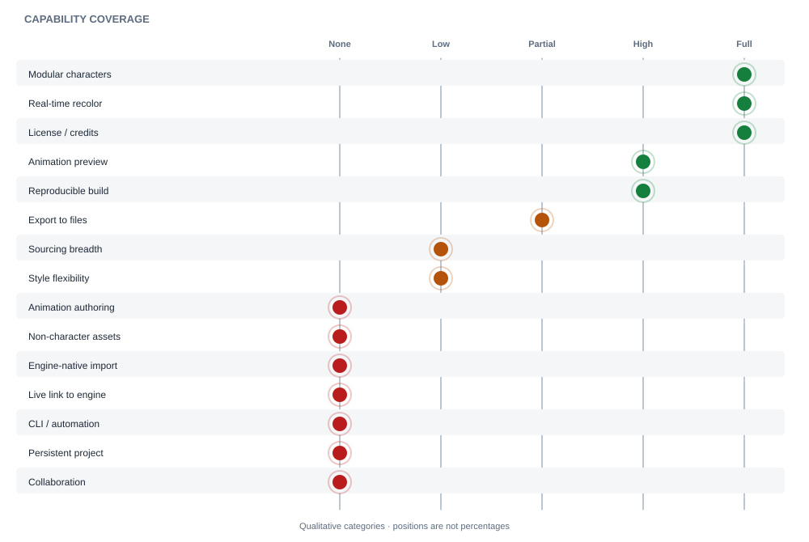

Get a character without drawing
Assemble a complete character from prebuilt LPC art - no pixel-art skill required.
Phase 1 · Research · Baseline analysis
Taking the Universal LPC Spritesheet Generator as the starting point: what it lets users do today, and where it falls short of the full set of indie-developer needs.
Context
This page deep-dives the tool profiled in Universal LPC Generator and benchmarks it against the needs in The Indie 2D Sprite Pipeline.
The generator squarely serves a specific slice of the "author a character" job.
Assemble a complete character from prebuilt LPC art - no pixel-art skill required.
Swap body, head, hair, headwear, arms, torso, legs, feet, tools, and weapons across body types (male, female, teen, child, muscular, pregnant).
Real-time, GPU-accelerated palette recoloring so a look can be tuned instantly.
Live animation preview with documented frame cycles, plus a full-sheet preview.
Download a spritesheet PNG and ZIP splits (by animation, item, or frame) ready to drop into a project.
Export a precise CREDITS file (CSV/TXT) and filter items by license so attribution is correct and store-safe.
Export/import selections as JSON to reopen a character later or share the exact recipe.
Filter available items by animation so only relevant assets show.
Jam prototyping
A solo dev under a jam clock needs a walking hero in minutes - assemble, recolor, download, drop in.
Placeholder-to-ship characters
A programmer without an artist needs "good enough" NPCs and enemies for a whole game, with legal cover.
NPC variety at scale
Generate many visually distinct townsfolk by varying layers and palettes from one base.
Design exploration
Try outfits/gear combinations quickly to lock a character's visual identity before building around it.
Reproducible handoff
Save the JSON recipe alongside the PNG so the exact character can be regenerated or credited later.
Everything the generator lets a user do today, grouped by area.
Assemble
Choose body type → stack layers across categories → auto-match colors.
Refine
Recolor palettes in real time → scrub the animation preview → adjust until it reads right.
Constrain
Apply license and animation filters so the character only uses assets that fit the project's terms/needs.
Export
Download the sheet (PNG) and the split ZIPs; grab the matching CREDITS file.
Preserve
Export selections to JSON (and/or copy the URL) to reproduce or share the exact build.
Integrate (out of tool)
Manually import the sheet into the engine, slice it, wire animations, and paste credits.
Mapping the generator against the end-to-end pipeline shows it owns the middle "author" stage well and leaves the surrounding stages - and several cross-cutting needs - unaddressed.

| Need | Coverage | Notes |
|---|---|---|
| Modular characters | Full | Core strength: layered, multi-body-type composition. |
| Real-time recolor | Full | WebGL palette swapping with CPU fallback. |
| License / credits | Full | Per-layer license filter + exact CREDITS export. |
| Animation preview | High | Preview + frame cycles, but preview only - not authoring. |
| Reproducible build | High | JSON export/import and URL deep-links. |
| Export to files | Partial | PNG + ZIP splits + credits, but generic files, not engine-native. |
| Sourcing breadth | Low | LPC corpus only; no non-LPC packs or marketplaces. |
| Style flexibility | Low | Locked to the LPC style/grid/palette. |
| Animation authoring | None | Cannot create/edit animations or add new ones. |
| Non-character assets | None | Characters only - no tiles, props, FX, UI. |
| Engine-native import | None | No Godot/Unity-native resources; manual slicing required. |
| Live link to engine | None | No auto-update into a running project. |
| CLI / automation | None | GUI only; not scriptable for agents/CI. |
| Persistent project | None | No accounts/projects; state lives in a JSON file/URL. |
| Collaboration | None | No sharing/versioning beyond a copied file or link. |
Where the generator stops short of the exhaustive need set at this stage of development.
No tilesets, props, environment art, FX, or UI - a game needs far more than a character, so users still juggle other tools/sources.
Everything is LPC 64x64. Teams wanting a different resolution, perspective, or art direction can't use it at all.
Users are limited to the animations LPC already provides; they can't create new moves, timings, or directions.
Bringing in a hand-drawn layer or a non-LPC pack and having it fit the system isn't supported.
Output is generic PNG/ZIP; users still import, slice, set pivots, and wire animation state machines by hand - per engine.
Every tweak means re-export and re-import; there's no auto-update into a running Godot/ Unity project.
It's GUI-only, so agents, scripts, and CI can't automate generation, export, or credit refresh.
Engine consumption relies on community plugins of varying maturity, not a first-party path.
State lives in a JSON file or URL; there's no cloud project, history, or asset library across sessions.
Producing dozens of NPC variants is manual and repetitive - no batch/parametric generation.
No sharing, versioning, or team workflows beyond passing a file or link around.
The tool exports correct credits, but keeping them in sync in the shipped game - and across many assets - is still manual.
If users forget to export the JSON/URL, they can't easily return to a build - a known, documented pain point.
Mixed CC-BY-SA/GPL/OGA-BY/CC0 terms and DRM-store ambiguity still require the user to understand licensing to stay safe.
Deep item trees can overwhelm newcomers who just want a good default character fast.
It outputs art, not game-ready behavior; nothing understands the project it's destined for.
Takeaway for this project
The generator is the right nucleus - modular composition, recolor, and licensing are solved and worth adopting. The opportunity is to wrap that nucleus with what it lacks: broader assets and styles, animation authoring, engine-native + live integration, a scriptable CLI, and a persistent, collaborative project - turning a single-stage character tool into the end-to-end sprite pipeline.